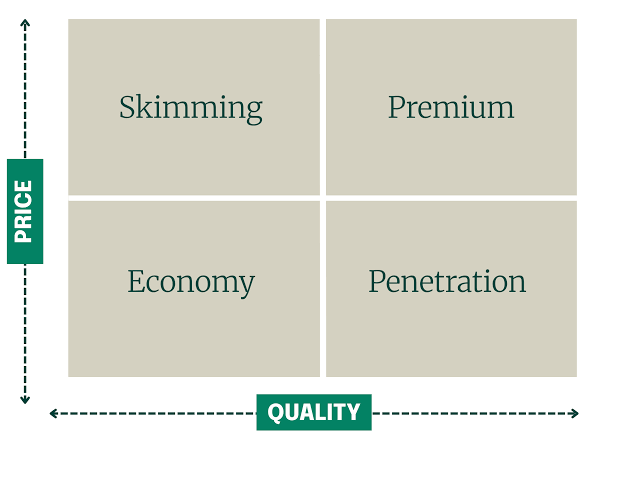

Equity Research (ER)
Learn how research analysts analyze public equities, build 3-statement earnings models, set 12-month target prices, and issue institutional stock recommendations.

Equity Research is a division of the sell-side that analyzes companies, industries, and markets to produce investment recommendations for institutional investors. Equity researchers investigate company performance, industry trends, and competitive dynamics to provide actionable investment insights.
The role requires deep analytical skills, strong financial modeling capabilities, and the ability to communicate complex ideas clearly. Equity researchers publish reports, speak with clients, and often appear on financial media to discuss their views.
Core Functions
Equity researchers research companies and industries, build financial models, write research reports, and issue buy/sell/hold recommendations. They interact regularly with institutional investors to communicate their investment theses.
The work involves analyzing financial statements, attending company meetings and investor days, conducting industry channel checks, and building detailed financial models, including DCF, CCA, and PTA. Researchers must stay current on market developments and company-specific news.
• DCF (Discounted Cash Flow): Intrinsic valuation based on projected future cash flows.
• CCA (Comparable Company Analysis): Relative peer trading multiples (P/E, EV/EBITDA).
• PTA (Precedent Transactions Analysis): Valuation based on historical M&A buyout multiples.
The Research Process
The research process involves analyzing financial statements, attending company meetings and investor days, and conducting industry channel checks. Researchers build detailed financial models to support their investment recommendations.
Analysts must synthesize large amounts of information into a clear investment thesis that can be communicated to clients. The research process is continuous, with analysts constantly updating their models and recommendations as new information becomes available.
Financial Analysis ➔ Channel Checks & Management Meetings ➔ Model Updates ➔ Investment Thesis & Rating
Career Progression
Research Associate (2-3 years) → Analyst (Senior) → Vice President → Director → Head of Research.
Promotion is based on the quality of research, the accuracy of recommendations, and the ability to attract clients.
Senior researchers build a reputation that drives client interest and, in turn, generates revenue for the firm through trading commissions. Top analysts are highly compensated and often become influential voices in their industry sectors.
Research Associate (Financial Modeling & Report Drafting) ➔ Senior Analyst
(Coverage Lead & Ratings) ➔ Vice President / Director (Sector Strategy & Key Clients) ➔
Head of Research (Department Leadership & Firm Strategy)
📝 Practice Quiz & Submodule Check
Complete all questions to unlock Submodule 4.3Answer the multiple-choice questions below to test your understanding of Equity Research concepts.